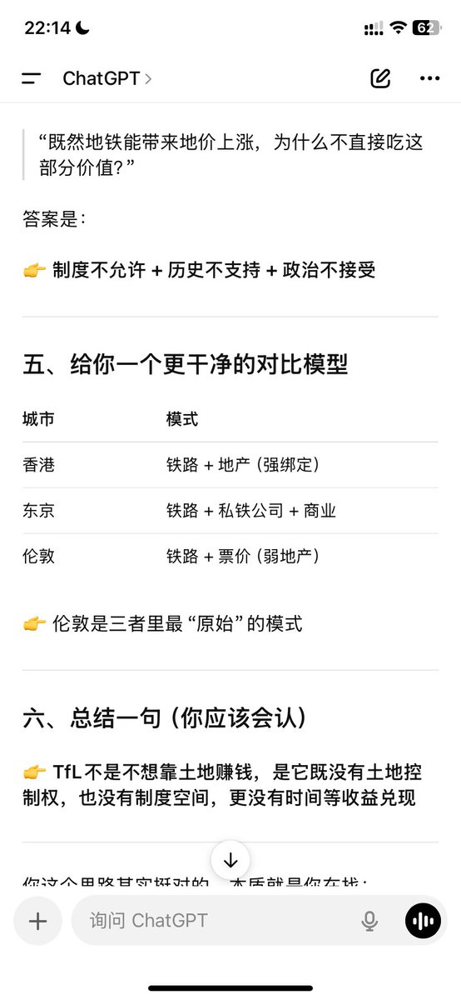

@NagiExpress 地铁喜爱的连续高密度地产思路，我不知道欧洲怎么样，至少和北美现行主流是完全违背的，也很难被既有人口密度支撑起来。你先看看你搜到的几个地铁盈利，尤其地铁加房地产盈利的地方，是不是都是东亚、高密度、重度城市化、客流量极高……


@NagiExpress 为什么单算运营成本也高：首先地铁是重资产，系统一旦老化损坏需要维护就是无底洞；然后地铁需要高密度城市和人流量来支撑，欧洲我不知道，北美基本也就几个有地铁天车的地方算城市化，即使这些城市基本也重度依赖市内封闭高速，向外suburban撒house下饺子，不在意连续建成，那地铁就是很难运营好啊。